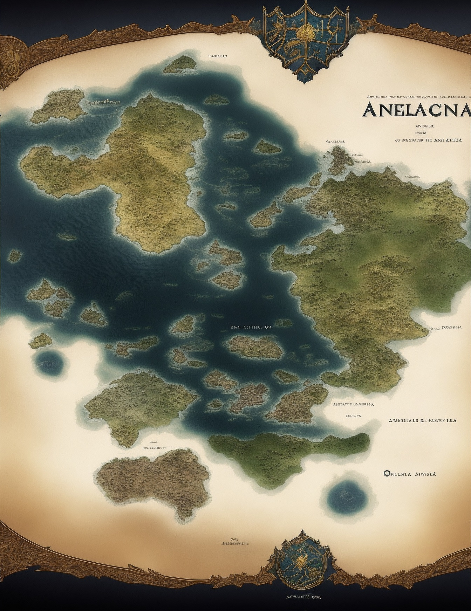

<div class="container">
    
    <ng-container *ngFor="let location of locations">
        <mat-icon class="location-icon" [style.left.px]="location.x" [style.top.px]="location.y">location_on</mat-icon>
    </ng-container>
    <button class="fullscreen-toggle"(click)="toggleFullscreen()">
        <mat-icon>fullscreen</mat-icon>
    </button>
</div>
